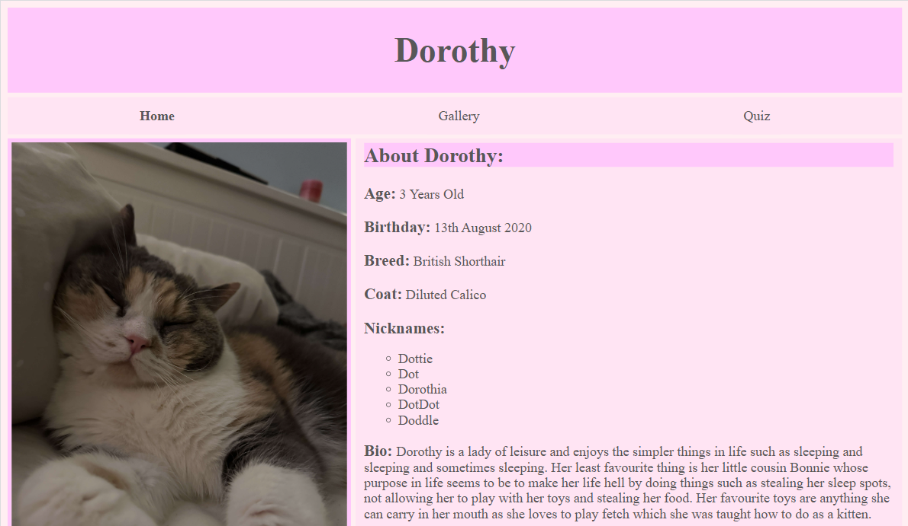

During my third year at university for my Front-End Web Developoment module
I was given the task of creating a website of my choice using the techniques
that had been taught within the lectures and labs. Appart for some minimal
word during my A-Levels this was my first introduction to website building
and the coding languages HTML, CSS and JavaScript which I really enjoyed.
The IDE I used was Virtual Studio Code which I had used for a few modules
throughout my time at university which is easy to use.
The finished website is fully working and has three different sections. The
main page that gives a summary of who Dorothy is and some basic facts about
her. The second page contains a mutitude of images which is in three different
sections one with a gallery of pictures of just her, the next pictures of her
at different ages and the third pictures of her and her cousin Bonnie. All the
images have a hover effect that makes the image bigger with a drop shadow.
The third section of the website is a quiz based on the information given to
the user on the website. This presents the user with a mark out of seven for
the ammount of questions the user got correct.
Throughout this project I got to tap into my love for design which I wasn't
able to do much during my degree, for this reason this module was one of my
favourites as I got to learn the new skill of website creating which got to
use both my creative side and my techincal side. For this module I was given
83% awarding me a first in this module.